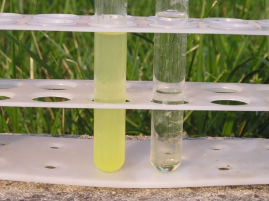

Il Cobaltinitrito di sodio Na3[Co(N02)6] è un bel sale complesso di coordinazione del cobalto che serve per l'analisi tradizionale del potassio.
Analisi tradizionale? Avete presente quel bancone piastrellato, col bunsen sempre acceso, una schiera di provette, beute e becker disponibili a volontà e reagenti chimici quanto basta allo scopo contingente?
La chimica di questo blog (chimica per hobby) è rimasta quella del periodo romantico, niente spine da attaccare nel mio lab, se non qualche misero riscaldatore/agitatore!
Ecco come ho preparato questa sostanza, a partire dal cloruro di cobalto:
1- preparazione del nitrato di cobalto
Non avendo a disposizione il Co(NO3)2.6H2O ma il cloruro CoCl2.2H2O, ho preparato una soluzione di 2,8 g di questo sale in 20 ml di acqua e di 1,45 g di NaOH in altrettanta acqua.
Unendo le due soluzioni e mescolando, precipita immediatamente l'idrossido di cobalto insolubile Co(OH)2 di colore blù/azzurro. Filtrando, si nota che il colore cambia abbastanza velocemente in rosa; si lava bene il precipitato per eliminare tutto il NaCl formatosi e si pone ancora umido in un becker.
Ho aggiunto goccia a goccia acido nitrico al 30% finchè tutto il precipitato si sia sciolto, ottenendo un liquido rosa/rosso, senza eccedere nell'aggiunta di acido per ottenere un prodotto puro.
Questa sol. concentrata di pochi ml di nitrato di cobalto serve per il passaggio successivo.
2- preparazione del cobaltinitrito
Preparare una soluzione di 15 g di NaNO2 in 20 ml di acqua tiepida; aggiungere 5 g di Co(NO3)3•6H2O (oppure tutta la soluzione sopra preparata) e 5 ml di CH3COOH (acido acetico) al 50% in piccole porzioni agitando.
Mettere la miscela in un cilindro graduato (o altro recipiente alto e sottile) e far gorgogliare nella soluzione una veloce corrente di bollicine d'aria per mezz'ora (serve un compressore d'aria e un piccolo arrangiamento di tubi sottili).
Dopo un riposo di due ore, si decanta con una pipetta la sol. bruna dal prec. giallo del fondo, dovuto ad impurezze.
La soluzione (circa 30ml) deve essere perfettamente limpida e va ora trattata con altrettanto etanolo.
Il precipitato che si forma (è il nostro sodio cobaltinitrito) è lasciato riposare per un paio ore, poi filtrato sotto vuoto e lavato quattro volte con 2,5 ml di etanolo, due volte con etere e seccato all'aria.
Ho ottenuto circa 4 g di complesso sodico-cobaltico, che ho conservato secco e ben chiuso. L'immagine mostra il bel sale giallo, pronto per la sua bottiglietta!

Qualche goccia di soluzione al 10% di cobaltinitrito in presenza di ioni potassio, fa precipitare il cobaltinitrito potassico, come si vede nella provetta sottostante di sinistra, contenente 1 g/l di bromuro di potassio prontamente rivelato dal precipitato giallo cristallino! Nell'altra provetta c'è qualche goccia di reattivo in acqua pura.
